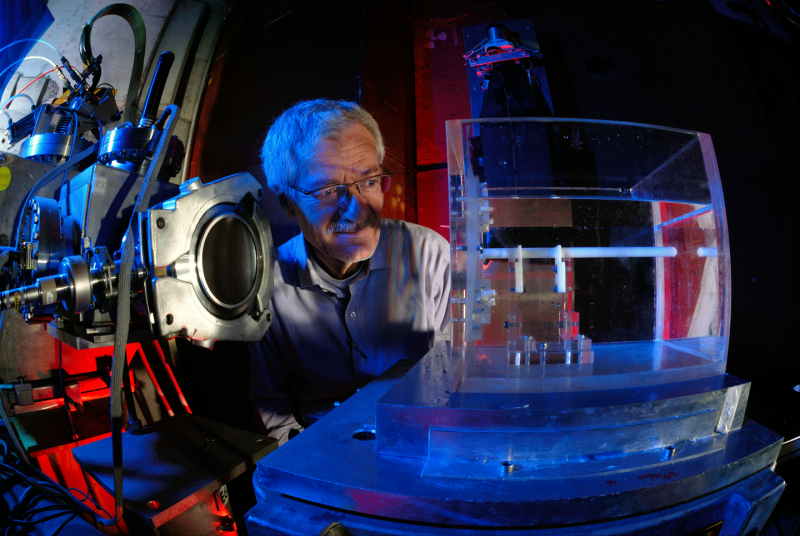

ACE

The Antiproton Cell Experiment (ACE) started in 2003. It aims to assess fully the effectiveness and suitability of antiprotons for cancer therapy. The experiment brings together a team of experts in physics, biology and medicine from 10 institutes around the world who are the first to study the biological effects of antiprotons.
To date, particle-beam therapy has used mainly protons to destroy cancer cells. The particles are sent into a patient’s body with a pre-determined amount of energy, just enough that they stop when they reach the specific depth of a tumour. When such a beam of heavy, charged particles enters a human body, it initially inflicts very little damage. Only in the last few millimetres of the journey, as the beam ends its gradual slow-down and comes to an abrupt stop does significant damage occur. Unfortunately, although the beam destroys the cancer it does affect healthy cells along its path, so the damage to healthy tissues increases with repeat treatments.
The ACE experiment is testing the idea of using antiprotons as an alternative treatment, by directly comparing the effectiveness of cell irradiation using protons and antiprotons. When matter (in this case, the tumour cells) and antimatter (the antiprotons) meet, they annihilate (destroy each other), transforming their mass into energy. The aim is to make use of this effect, allowing an antiproton to annihilate with part of the nucleus of an atom in a cancer cell. The energy released by the annihilation should blow the nucleus apart and project the fragments into adjacent cancer cells, which should in turn be destroyed.In the experimental set up, tubes were filled with live hamster cells suspended in gelatin to simulate a cross-section of tissue inside a body. The researchers sent a beam of protons or antiprotons with a range of 2 centimetres in water into one end of the tube, and evaluated how the fraction of surviving cells varied with the depth in the target. Initial results showed that four times fewer antiprotons than protons were needed to inflict the same level of cell damage. In treatment, this would mean significantly reduced damage to the healthy tissues. An antiproton beam could be highly valuable in treating cases of recurring cancer, where it is vital to avoid repeated damage to healthy cells.
ACE is an excellent example of how research in particle physics can bring innovative solutions with potential medical benefits. However, the validation process for any new medical treatment is lengthy. Even if all goes well, it could still take a decade for the first clinical application to appear.